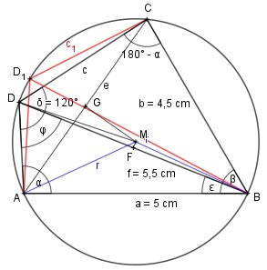

Aufgabe 155 Wie groß ist die Seite c des Sehnenvierecks?

Satz am Sehnenviereck: Die Summe der gegenüberliegenden Winkel ergibt 180°. β = 180° - δ = 180° - 120° = 60° Im Dreieck ABC: Fall SWS: Cosinussatz: e2 = a2 + b2 - 2 * a * b * cos β e2 = 52 + 4,52 - 2 * 5 * 4,5 * cos 60° e2 = 52 + 4,52 - 2 * 5 * 4,5 * 0,5 = 22,75 e2 = 22,75 |√ e = 4,77 m Der Umfangswinkel über der Sehne AC ist β = 60°. Satz: Der Mittelpunktswinkel AMC über der Sehne AC ist doppelt so groß wie der Umfangswinkel β. MG steht senkrecht auf AC und halbiert AC. Im rechtwinkligen Dreieck AMG gilt: Der Winkel AMG ist der halbe Mittelpunktswinkel = Umfangswinkel β. e/2 sin β = ------- |*r r r * sin β = e/2 |:sin 60° e/2 4,77/2 cm 4,77/2 cm r = ------- = ----------- = ----------- = 2,754 cm sin β° sin 60° 0,866 f ist größer als a, und r ist etwas größer als f, damit muss es 2 Lösungen für α geben. Dabei liegt der Schnittpunkt der Diagonalen f mit dem Umkreis mal über mal unter dem Mittelpunkt M des Umkreises. MF steht senkrecht auf DB und halbiert DB. Im rechtwinkligen Dreieck BFM gilt: Der Winkel BMF ist der halbe Mittelpunktswinkel = Umfangswinkel 180° - α. f/2 5,5/2 cm sin (180° - α) = ------ = ------------ = r 2,754 cm = 0,9985 --> 180° - α = 86,9° --> α = 180° - 86,9° = 93,1° sin α = sin (180° - α) = = sin 93,1° = sin 86,9° = 0,9985 Im Dreieck DAB gilt: Fall SSW: Sinussatz: f a ------- = -------- |*sin φ sin α sin φ f * sin φ ----------- = a | *sin α sin α f * sin φ = a * sin α | :f a * sin α 5 cm * 0,9985 sin φ = ------------ = --------------- = f 5,5 cm = 0,9077 --> φ = 65,2° ε = α – φ = 86,9° - 65,2° = 21,7° ∢AD1B = 180° - α – φ = 180° - 86,9° - 65,2° = = 27,9° ∢DBC - ε = 60° - 21,7° = 38,3° ∢BD1C = 60° - ε2 = 60° - 27,9° = 32,1° Im Dreieck DBC gilt: Fall SSW: Sinussatz: c f ----------- = ----------- |*sin 32,1° sin 32,1° sin 86,9° f * sin 32,1° c = --------------- = sin 86,9° 5,5 cm * sin 32,1° 5,5 cm * 0,5314 = -------------------- = ------------------ = 0,9985 0,9985 = 2,9 cm Im Dreieck D1BC gilt: Fall SSW: Sinussatz: c1 f ----------- = ----------- |*sin 38,3° sin 38,3° sin 93,1° f * sin 38,3° c = --------------- = sin 93,1° 5,5 cm * sin 38,3° 5,5 cm * 0,6198 = -------------------- = ----------------- = 0,9985 0,9985 = 3,4 cm